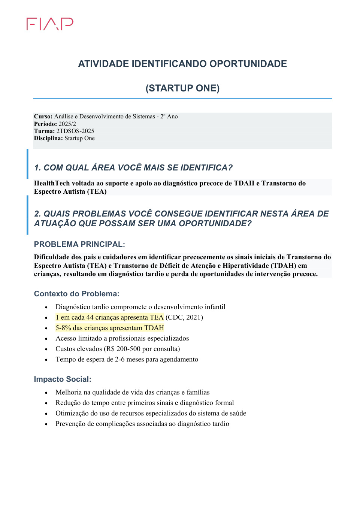
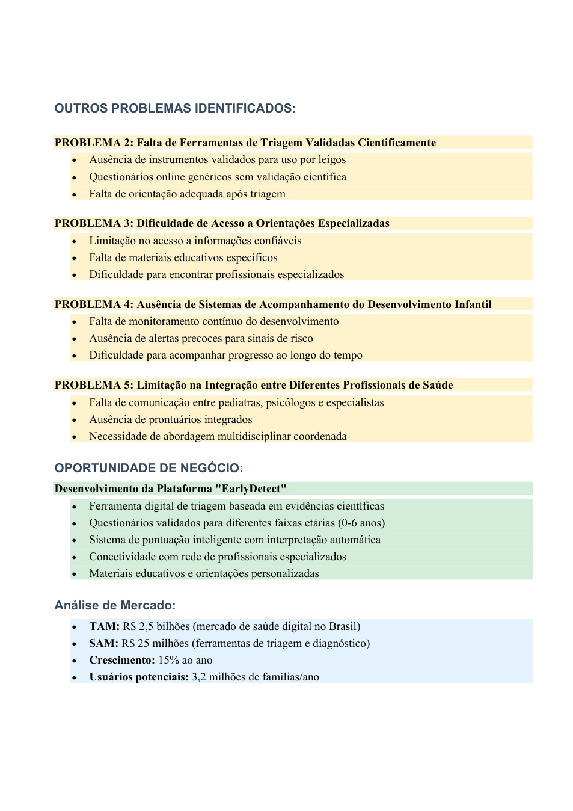

Página 1 de 3
ATIVIDADE IDENTIFICANDO OPORTUNIDADE
(STARTUP ONE)
Curso: Análise e Desenvolvimento de Sistemas - 2º Ano
Período: 2025/2
Turma: 2TDSOS-2025
Disciplina: Startup One
1. COM QUAL ÁREA VOCÊ MAIS SE IDENTIFICA?
HealthTech voltada ao suporte e apoio ao diagnóstico precoce de TDAH e Transtorno do
Espectro Autista (TEA)
2. QUAIS PROBLEMAS VOCÊ CONSEGUE IDENTIFICAR NESTA ÁREA DE
ATUAÇÃO QUE POSSAM SER UMA OPORTUNIDADE?
PROBLEMA PRINCIPAL:
Dificuldade dos pais e cuidadores em identificar precocemente os sinais iniciais de Transtorno do
Espectro Autista (TEA) e Transtorno de Déficit de Atenção e Hiperatividade (TDAH) em
crianças, resultando em diagnóstico tardio e perda de oportunidades de intervenção precoce.
Contexto do Problema:
• Diagnóstico tardio compromete o desenvolvimento infantil
• 1 em cada 44 crianças apresenta TEA (CDC, 2021)
• 5-8% das crianças apresentam TDAH
• Acesso limitado a profissionais especializados
• Custos elevados (R$ 200-500 por consulta)
• Tempo de espera de 2-6 meses para agendamento
Impacto Social:
• Melhoria na qualidade de vida das crianças e famílias
• Redução do tempo entre primeiros sinais e diagnóstico formal
• Otimização do uso de recursos especializados do sistema de saúde
• Prevenção de complicações associadas ao diagnóstico tardio
Ver página original com imagens e diagramas

Página 2 de 3
OUTROS PROBLEMAS IDENTIFICADOS:
PROBLEMA 2: Falta de Ferramentas de Triagem Validadas Cientificamente
• Ausência de instrumentos validados para uso por leigos
• Questionários online genéricos sem validação científica
• Falta de orientação adequada após triagem
PROBLEMA 3: Dificuldade de Acesso a Orientações Especializadas
• Limitação no acesso a informações confiáveis
• Falta de materiais educativos específicos
• Dificuldade para encontrar profissionais especializados
PROBLEMA 4: Ausência de Sistemas de Acompanhamento do Desenvolvimento Infantil
• Falta de monitoramento contínuo do desenvolvimento
• Ausência de alertas precoces para sinais de risco
• Dificuldade para acompanhar progresso ao longo do tempo
PROBLEMA 5: Limitação na Integração entre Diferentes Profissionais de Saúde
• Falta de comunicação entre pediatras, psicólogos e especialistas
• Ausência de prontuários integrados
• Necessidade de abordagem multidisciplinar coordenada
OPORTUNIDADE DE NEGÓCIO:
Desenvolvimento da Plataforma "EarlyDetect"
• Ferramenta digital de triagem baseada em evidências científicas
• Questionários validados para diferentes faixas etárias (0-6 anos)
• Sistema de pontuação inteligente com interpretação automática
• Conectividade com rede de profissionais especializados
• Materiais educativos e orientações personalizadas
Análise de Mercado:
• TAM: R$ 2,5 bilhões (mercado de saúde digital no Brasil)
• SAM: R$ 25 milhões (ferramentas de triagem e diagnóstico)
• Crescimento: 15% ao ano
• Usuários potenciais: 3,2 milhões de famílias/ano
Ver página original com imagens e diagramas

Página 3 de 3
Diferenciais Competitivos:
• Especialização específica em TEA/TDAH
• Validação científica rigorosa
• Interface intuitiva e acessível
• Integração com sistema de saúde
• Orientação personalizada baseada em resultados